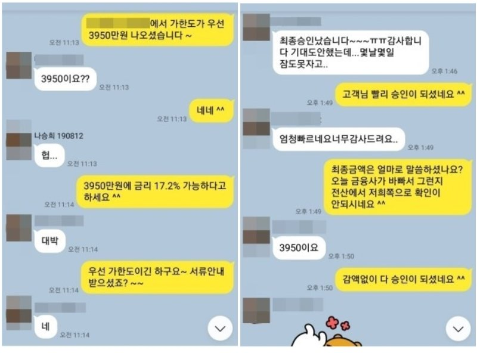

기대출 과다 직장인 추가자금 3950만원 승인사례!!!
안녕하세요~ 오늘은 제가 상담드린 나**고객님의 대출 사례를 안내해 드리겠습니다.
나** 고객님께서는 4대보험이 가입되어 있는 직장인 이셨으며, 월소득은 440만원 정도 되셨습니다.
기대출은 우리은행(주택담보)2억1500만원, 신한은행 2000만원+2900만원+1010만원,SBI저축 660만원
+2500만원+380만원, 롯데캐피탈 1160만원, 리드코프 440만원, 국제신탁(후순위담보)4800만원으로
소득대비 총 채무 금액과 대출 건수가 적지 않아 추가 대출 진행이 쉽지 않으신 상황 이셨습니다.
저는 상담 후 최근 승인율이 높은 금융사를 선정하여 도움드린 결과 한 금융사에서 3950만원이라는
큰 금액을 승인 받아 고객님께서도 매우 만족해 하셨습니다. 아래는 저와 나**고객님의 카톡상담
내용 일부를 캡쳐한것이오니, 참고하시어 많은 도움 되셨으면 좋겠습니다. 감사합니다.^^
